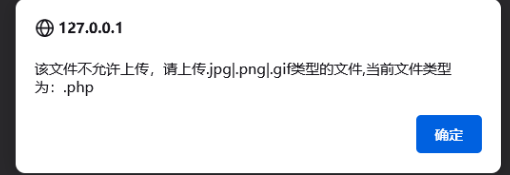

Pass1
Pass上传一个php一句话文件
保存为.php格式

发现不允许上传php文件,将一句话木马改为.png,然后使用burp拦截，再将文件后缀名改为php后，放包
上传成功后，复制链接，用蚁剑连接

Pass7
Pass7观察源码发现，少了删除文件名末尾的‘.’
添加’后上传即可
Pass8
Pass8观察源码发现，少了去除字符
php在window的时候如果文件名+”::DATA“会把::DATA 之 后 的 数 据 当 成 文 件 流 处 理 , 不 会 检 测 后 缀 名 . 且 保 持 ” : : DATA之后的数据当成文件流处理,不会检测后缀名.且保持”::DATA之后的数据当成文件流处理,不会检测后缀名.且保持”::DATA”之前的文件名，他的目的就是不检查后缀名
添加::$DATA后上传即可
Pass9
Pass9观察源码发现，它先将后缀名后的‘.’删除，然后删除空格
并且他禁止了之前所有的后缀名，所以我们可以把文件后缀改成xxx.php. .,经过代码处理后变成xxx.php.绕过即可
Pass10
Pass10观察源码发现$file_name = str_ireplace($deny_ext,””, $file_name);
这个代码的意思就是把带有黑名单中的后缀替换为空。这时我们尝试双写绕过。如上传的xxx.pphphp就会变成xxx.php绕过
上传成功
Pass11
Pass11观察源码发现，本关采用的是白名单机制，并且将上传文件的后缀名改为白名单里的后缀名
我们可以尝试使用00截断上传
00截断的原理，就是利用0x00是字符串的结束标识符，攻击者可以利用手动添加字符串标识符的方式来将后面的内容进行截断，而后面的内容又可以帮助我们绕过检测。
需要注意的是，0x00截断是16进制的截断，需要修改16进制的数据头，如果使用burp，就要在Hex中对数据进行改写。
如果php版本高于5.3会上传出错
Pass12
Pass12大体与上一关相同，但直接添加00截断发现不行，因为在post里面%00会被认为是字符串，所以换个方式加，先在php后面加个+，然后文件名改为jpg，再到后面的hex里面加个空格
如果php版本高于5.3会上传出错
Pass13
Pass13需要上传图片码，观察源码发现，此关只检查文件内前两个字节的内容
所以我们在一句话木马前加上GIF 89A就可以转换成为gif文件了
后续操作，抓包，将gif改为php
上传成功
Pass14
Pass14观察源码发现，其中有一个getimagesize函数
这个函数的意思是：会对目标文件的16进制去进行一个读取，去读取头几个字符串是不是符合图片的要求的，所以这关还是用和13关一样的方法
Pass15
Pass15观察源码发现，其中有一个exif_imagetype函数，exif_imagetype()函数可以获取图片类型
后续操作同pass13。
Pass16
Pass16观察源码发现，其中有一个imagecreatefromjpeg函数
imagecreatefromjpeg二次渲染它相当于是把原本属于图像数据的部分抓了出来，再用自己的API 或函数进行重新渲染在这个过程中非图像数据的部分直接就隔离开了。
Pass17
Pess17主要是对条件竞争的考察，查看源码，发现此关是先将图片上传上去，才开始进行判断后缀名、二次渲染。
如果我们在上传上去的一瞬间访问这个文件，那他就不能对这个文件删除、二次渲染。
这就相当于我们打开了一个文件，然后再去删除这个文件，就会提示这个文件在另一程序中打开无法删除。
先直接上传一个php文件
然后进行抓包，将数据包发送至intruder下
然后发包，用另一个浏览器一直访问18.php地址，只要在上传的一瞬间，他还没来的及删除、修改就可以了。
Pass18
Pass18这关还是同样的竞争条件
绕过方法和上一关的一样，但是这关在上传之前用了白名单来检测，所以只能上传图片马
Pass19
Pass19可以在文件保存名称处绕过白名单过滤
这里在php后面添加%00，然后使用URLcode将%00进行编码
如果php版本高于5.3会上传出错，前面00截断的关卡如果出现同样错误也是由于版本过高
Pass20
Pass20利用数组绕过验证